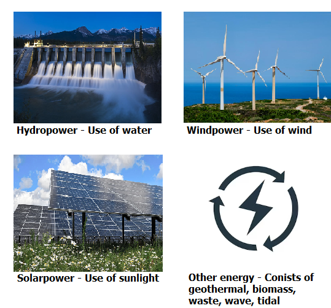

As the world confronts increasing environmental challenges, the transition to renewable energy sources has become a critical focus for governments, businesses, and individuals alike.
Renewable energy, derived from natural processes that are continuously replenished, offers a sustainable alternative to fossil fuels.
This report aims to explore the current state of renewable energy around the globe, highlighting the various types of renewable energy and the production and consumption trends across different continents.
By examining advancements in technology, policy frameworks, and public awareness, people can better understand how renewable energy can shape a sustainable future for the planet.

Comparing the yearly changes from 2010 to 2020, the choropleth map shifts toward darker green shades, indicating a gradual global adoption of renewable energy production.
The most notable changes are observed in Africa and Oceania, where advancements in technology and increased funding have accelerated the growth of renewable energy projects.
China, India, Brazil, and Mozambique consistently rank high in renewable energy production per GDP per capita from 2010 to 2020.
While the United States and Canada also produce large amounts of renewable energy, their high GDP results in much lower normalized scores.
As shown in the chart, China produces the most renewable energy among all countries.
Its production is so dominant that it exceeds that of the second-highest country, the United States, by 140%.
The United States also performs well, producing nearly double the amount of Brazil.
Other developed countries follow, leveraging their financial resources to invest in renewable energy projects.
Based off the graph, there seems to be some sort of relationship between renewable energy production and the GDP per capita for a country.
Note that both axises have been logged, thus the data does not follow a linear relationship.
However, when highlighting a specific continent, the data points are somewhat clustered together.
Africa tends to produce low amounts of renewable energy with a lower GDP, while Europe produces more amounts of renewable energy with a higher GDP.
From the visualisation Hydro energy remains the dominant source, with production levels consistently rising to nearly 4,500 terawatt hours (TWh) by 2020.
In 2015, with the introduction of the Paris Agreement and global policy shifts, various renewable energy sources began to show gradual growth.
The data highlights a positive trend toward renewable energy diversification, signaling a transition towards more sustainable energy practices globally.
The bar chart highlights that Asia leads in renewable energy production, with China being a major contributor to the continent's total output, as shown in the previous visualisation.
Europe and North America also demonstrate strong energy production, though not as dominant as Asia.
In contrast, Africa and Oceania lag far behind due to limited resources in Africa and the small number of countries in Oceania, where Australia is the primary contributor.
Hydropower remains the leading source of renewable energy, reinforcing the point made in the above line chart.
It is clear that each continent produces and consumes roughly the same amount of energy, which suggests a balance between production capacity and energy demand across regions.
Asia produces and consumes the most energy, which indicates that the region's high population and industrial activity drive both energy demand and production.
Asia, Europe, and North America produce slightly more energy than they consume, while Africa, Oceania, and South America consume slightly more than they produce.
Created by: Richard Hua
Date: 13/10/2024
Data sources: Link to data sources